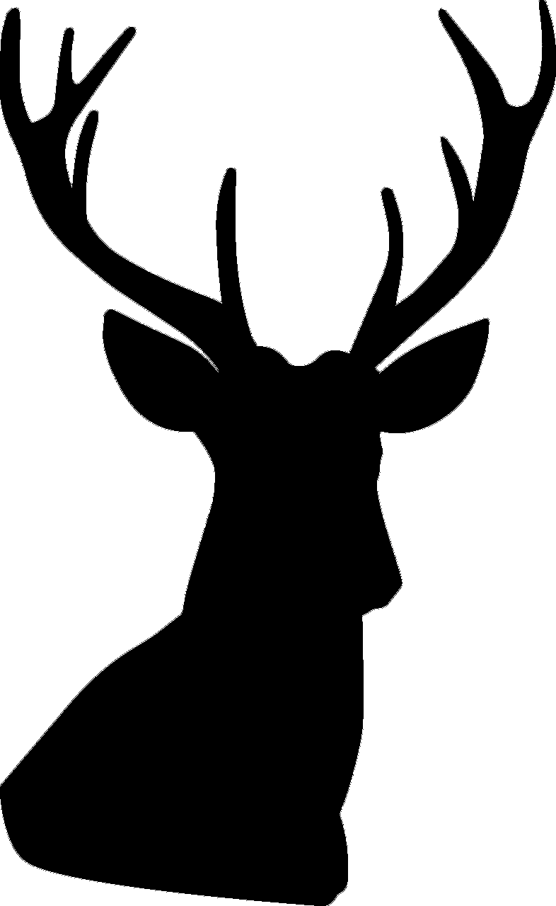
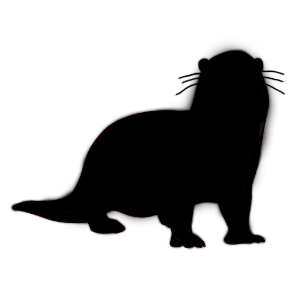

Ciervo, irradia elegancia y gracia en su presencia. Su mente astuta, corazón compasivo y carisma natural
lo hacen encantador y respetado por los demás. Enfrenta los desafíos con valentía y muestra una
resiliencia admirable ante la adversidad"

Nutria, se muestra simpático y divertido, disfrutando del tiempo de calidad junto a su círculo cercano.
Pero
detrás de su apariencia amigable, se esconden mentes muy inteligentes. Con serenidad y sabiduría,
resuelven
conflictos con éxito y continúan disfrutando de la vida. Su habilidad para mantener la armonía y salir
victoriosos los hace ser seres excepcionales y admirables.

Erizo, un individuo cauteloso destaca por su astucia y serenidad. Siempre alerta y adaptándose a los
cambios, resuelve desafíos con habilidad. Sus defensas son notables y su independencia, admirable.
Aunque
parece reservado, disfruta del tiempo con sus seres queridos. Un ser enigmático y excepcional que
cautiva
con su encanto único.
Buho, Este grupo de individuos se presenta como tranquilos y relajados, pero detrás de esa apariencia
serena, poseen una astucia notable y una sorprendente capacidad para anticipar lo que está por venir.
Siempre vigilantes y controladores, observan cuidadosamente todo lo que ocurre a su alrededor,
demostrando
un talento excepcional para leer las situaciones con precisión. Su habilidad para anticipar y adaptarse
los
hace ser seres verdaderamente enigmáticos y fascinantes.
Perro lobo, Este ser muestra una personalidad que aparenta ser solitaria, pero en realidad, es un
protector
dedicado de su manada. Su lealtad, valentía e inteligencia lo hacen destacar, convirtiéndolo en alguien
excepcional. Siempre dispuesto a enfrentar desafíos, cautiva a quienes lo conocen con su profundo
compromiso
y misterioso encanto hacia los suyos.
Zorro, lleno de astucia y agilidad, destaca por su habilidad para resolver acertijos con
destreza.
Su espíritu juguetón lo lleva a encontrar diversión en cada desafío que enfrenta, demostrando una aguda
inteligencia para superar obstáculos. Aunque muestra cautela en ocasiones y puede ser algo temeroso, su
ingenio lo hace destacar en cualquier situación. Su encanto único y enigmático lo convierte en alguien
admirado por su sabiduría y capacidad para resolver misterios.